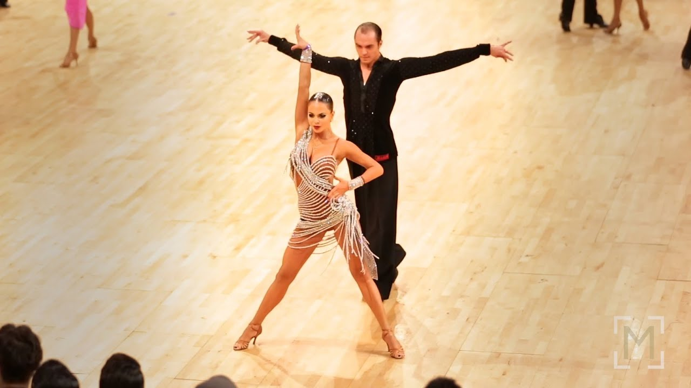

cha-cha
rumba
samba
jive
pasodoble
Kubański, latynoamerykański taniec towarzyski w metrum parzystym 4/4 i typowym tempie 32-33 taktów na minutę, wywodzący się z rumby i mambo. Taniec cha-chy opiera się na kroku chassé, czyli kroku w formacie odstaw-dostaw-odstaw. Główną zasadą techniczną są tzw. „przeprosty”, figury polegające na wyprostowywaniu kolan na „raz” oraz w figurze „lockstep”. Ruch bioder jest wyraźny, podobny do tego z rumby, lecz jednak nie tak głęboki, ze względu na szybsze tempo.
Latynoamerykański taniec towarzyski pochodzący z Kuby. Rumba ma metrum 4/4. Rozliczenie tempa kroku podstawowego to wolny, szybki, szybki. Trzymanie podobnie jak w innych tańcach latynoamerykańskich może być otwarte (za jedną rękę) lub zamknięte (obiema rękoma). Ciężar ciała musi być stale utrzymywany nad palcami stóp. Chodzenie w tym tańcu odbywa się na nogach przeprostowanych. Rumba to taniec, wymagający dobrej koordynacji ruchów i znakomitej kondycji fizycznej. Ale o tym tańcu nie decyduje jedynie technika, której można się nauczyć, ale zaangażowanie w taniec, zmysłowość.

Taniec brazylijski. Prawdopodobnie wywodzi się z tańca „w kółko” afrykańskich ludów Bantu, ponieważ samba turniejowa tańczona jest „po kole”. Podobnie jak w innych tańcach latynoamerykańskich, figury podstawowe można tańczyć w trzymaniu zamkniętym lub trzymaniu otwartym. Jednak poza rzadko tańczonymi figurami podstawowymi, samba ma charakter progresywny – tańcząca para szybko przemieszcza się po całym parkiecie.
Amerykański taniec towarzyski z kanonów tańców latynoamerykańskich, powstały po 1910 roku. Jive dotarł do Europy w latach 1940., dzięki amerykańskim żołnierzom, początkowo pod nazwą jitterbug. Jego odmianą jest boogie-woogie, a ze względu na podobne kroki, często mylony jest z rock and rollem.

Hiszpański taniec w metrum 2/4. Tematycznie taniec ten przypomina walki na arenie toreadorów z bykami, tzw. corridę. Partner występuje w roli toreadora (hiszp. torero), a partnerka odgrywa rolę płachty i byka. Sam taniec składa się z trzech części: wejście na arenę, zobrazowanie samej walki i zabicia byka, parada po zakończeniu walki.